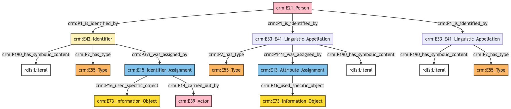
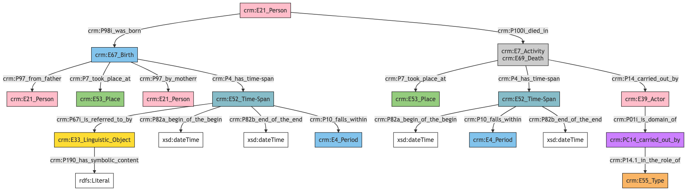
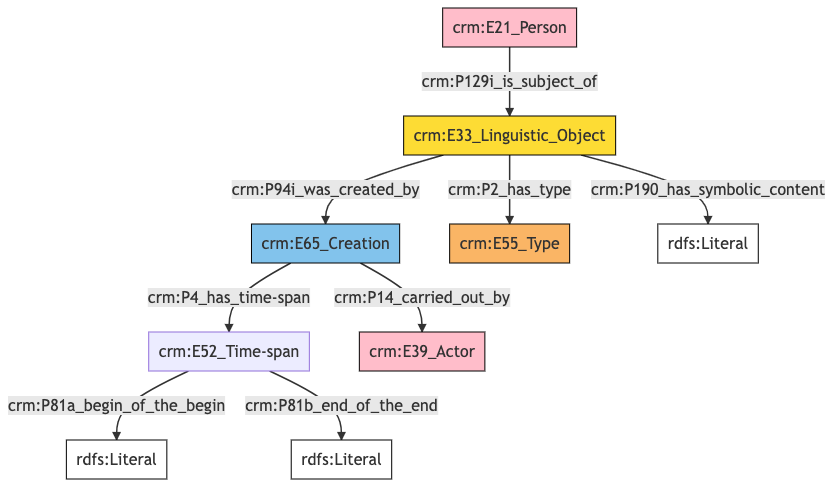
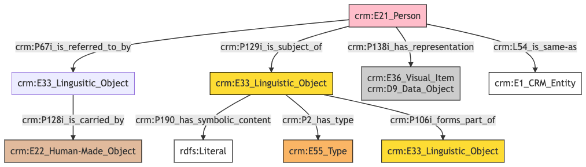

Person
Author: Denitsa Nenova, George Bruseker
Version: 1.0
The Person model is intended to enable the representation and sharing of data relevant to real-world, physical persons. Typical instances of Person are historical personages involved in the initial creation of Monuments, or in the witnessing of, response to, or interaction with Monuments as authors of Documents. The Person model, however, covers all real persons, and therefore also includes instances of researchers involved in the contemporary study of Monuments or Documents.
| Name | URI | |
|---|---|---|
| Root Ontology Node | E21 Person | https://cidoc-crm.org/Entity/E21-Person/version-7.1.1 |
| Type Differentiator | N/A | N/A |
The person model allows the documentation of the following kinds of information:
| Information Category | Information Collections | Description |
|---|---|---|
| Names and Classifications | Names/Alternative Names/Identifiers/Type | The researcher can document various names and classification regarding the Person. |
| Existence | Birth/Death | The researcher can document the events related to the birth and death of the Person. |
| Parthood | Group Membership | The researcher can document the membership of the Person in a group. |
| Description | Description | The researcher can document various free-text descriptions of the Person. |
| Documentation | Citation/Image/External URI | The researcher can document citations relative to the Person, link to images of the Person and document external URIs of documentation for the same Person. |
Person Names and Classifications
The attribution of names and types to Persons is a basic human activity. A chief factor in disambiguating which Person is referred to in historical texts is understanding the various names and identifiers that have been given to an individual at different moments. Likewise, additional classifiers of the individual (such as gender) help in the disambiguation, in an information system, of the reference to one real-world individual from another.
| Filed ID | Name | Description | Data Type | CRM Path |
|---|---|---|---|---|
| fie_1 | Person Identifier | This field is used to record an identifier attributed to the documented Person. | String | --> P1 --> E42[1_1] --> P190 --> rdfs:Literal |
| fie_2 | Person Identifier Type | This field is used to record the type of the identifier attributed to the documented Person. | Concept | --> P1 --> E42[1_1] --> P2 --> E55[2_1] |
| fie_3 | Person Identifier Provider | This field is used to record the institution, group or individual responsible for providing the documented Person's identifier. | Reference Model [Person/Group] | --> P1 --> E42[1_1] --> P37i --> E15[3_1] --> P14 --> E39[3_2] |
| fie_4 | Person Identifier Source | This field is used to record the source based on which the identifier was attributed to the documented Person. | Reference Model [Bibliographic Entity/Image] | --> P1 --> E42[1_1] --> P37i --> E15[3_1] --> P16 --> E73[4_1] |
| fie_5 | Person Name | This field is used to record the main name attributed to the documented Person. | String | --> P1 --> E33_E41[5_1] --> P190 --> rdfs:Literal --> P1 --> E33_E41[5_1] --> P2 --> E55[5_2]{'preferred terms'} |
| fie_10 | Person Alias | This field is used to record an alternative name under which the documented Person is known. | String | --> P1 --> E33_E41[10_1] --> P190 --> rdfs:Literal |
| fie_11 | Person Alias Type | This field is used to record the type of the alternative name that has been attributed to the documented Person. | Concept | --> P1 --> E33_E41[10_1] --> P2 --> E55[11_1] |
| fie_16 | Person Alias Source | This field is used to record the source on the basis of which the organization attributing the alternative name use based their attribution. | Reference Model [Bibliographic Entity/Image] | --> P1 --> E33_E41[10_1] --> P141i --> E13[15_1] --> P16 --> E73[16_1] |
- Person Names and Classifications Ontology Graph

- Person Names and Classifications RDF
@prefix crm: <http://www.cidoc-crm.org/cidoc-crm/> .
@prefix rdfs: <http://www.w3.org/2000/01/rdf-schema#> .
<https://census.de/example/actor/E21> a crm:E21_Person ;
crm:P1_is_identified_by <https://example.org/name/fie_10_1>,
<https://example.org/name/fie_1_1>,
<https://example.org/name/fie_5_1> .
<http://vocab.getty.edu/aat/300404670> a crm:E55_Type ;
rdfs:label "preferred terms" .
<https://example.org/actor/fie_3_2> a crm:E39_Actor .
<https://example.org/conceptual_object/fie_16_1> a crm:E73_Information_Object .
<https://example.org/conceptual_object/fie_4_1> a crm:E73_Information_Object .
<https://example.org/event/fie_15_1> a crm:E13_Attribute_Assignment ;
crm:P16_used_specific_object <https://example.org/conceptual_object/fie_16_1> .
<https://example.org/event/fie_3_1> a crm:E15_Identifier_Assignment ;
crm:P14_carried_out_by <https://example.org/actor/fie_3_2> ;
crm:P16_used_specific_object <https://example.org/conceptual_object/fie_4_1> .
<https://example.org/name/fie_10_1> a crm:E33_E41_Linguistic_Appellation ;
crm:P141i_was_assigned_by <https://example.org/event/fie_15_1> ;
crm:P190_has_symbolic_content "content" ;
crm:P2_has_type <https://example.org/type/fie_11_1> .
<https://example.org/name/fie_1_1> a crm:E42_Identifier ;
crm:P190_has_symbolic_content "content" ;
crm:P2_has_type <https://example.org/type/fie_2_1> ;
crm:P37i_was_assigned_by <https://example.org/event/fie_3_1> .
<https://example.org/name/fie_5_1> a crm:E33_E41_Linguistic_Appellation ;
crm:P190_has_symbolic_content "content" ;
crm:P2_has_type <http://vocab.getty.edu/aat/300404670> .
<https://example.org/type/fie_11_1> a crm:E55_Type .
<https://example.org/type/fie_2_1> a crm:E55_Type .
- Person Names and Classifications JSON-LD
{
"@context": "https://linked.art/ns/v1/linked-art.json",
"@graph": [
{
"classified_as": [
"http://vocab.getty.edu/aat/300404670"
],
"content": "content",
"id": "https://example.org/name/fie_5_1",
"type": "Name"
},
{
"classified_as": [
"https://example.org/type/fie_2_1"
],
"content": "content",
"id": "https://example.org/name/fie_1_1",
"identifier_assigned_by": [
"https://example.org/event/fie_3_1"
],
"type": "Identifier"
},
{
"id": "https://example.org/conceptual_object/fie_4_1",
"type": "InformationObject"
},
{
"id": "https://example.org/actor/fie_3_2",
"type": "Actor"
},
{
"assigned_by": [
"https://example.org/event/fie_15_1"
],
"classified_as": [
"https://example.org/type/fie_11_1"
],
"content": "content",
"id": "https://example.org/name/fie_10_1",
"type": "Name"
},
{
"_label": "preferred terms",
"id": "http://vocab.getty.edu/aat/300404670",
"type": "Type"
},
{
"carried_out_by": [
"https://example.org/actor/fie_3_2"
],
"id": "https://example.org/event/fie_3_1",
"type": "IdentifierAssignment",
"used_specific_object": [
"https://example.org/conceptual_object/fie_4_1"
]
},
{
"id": "https://census.de/example/actor/E21",
"identified_by": [
"https://example.org/name/fie_10_1",
"https://example.org/name/fie_1_1",
"https://example.org/name/fie_5_1"
],
"type": "Person"
},
{
"id": "https://example.org/conceptual_object/fie_16_1",
"type": "InformationObject"
},
{
"id": "https://example.org/type/fie_11_1",
"type": "Type"
},
{
"id": "https://example.org/type/fie_2_1",
"type": "Type"
},
{
"id": "https://example.org/event/fie_15_1",
"type": "AttributeAssignment",
"used_specific_object": [
"https://example.org/conceptual_object/fie_16_1"
]
}
]
}
Person Social Relations
A large area of documentation and potential disambiguation around the person relates to social relations, whether they are familial, interpersonal or institutional. The social relations information category brings together descriptors for these relations into a larger group, covering relations starting from the maternal, moving to the most general membership in national and cultural blocks and different interpersonal connections.
| Filed ID | Name | Description | Data Type | CRM Path |
|---|---|---|---|---|
| fie_34 | Person Group Membership | This field is used to record the institution or group to which the documented individual belonged as member. | Reference Model [Bibliographic Entity/Image] | --> P107i --> E74[34_1] |
- Person Social Relations Ontology Graph

- Person Social Relations RDF
@prefix crm: <http://www.cidoc-crm.org/cidoc-crm/> .
<https://census.de/example/actor/E21> a crm:E21_Person ;
crm:P107i_is_current_or_former_member_of <https://example.org/actor/fie_34_1> .
<https://example.org/actor/fie_34_1> a crm:E74_Group .
- Person Social Relations JSON-LD
{
"@context": "https://linked.art/ns/v1/linked-art.json",
"@graph": [
{
"crm:P107i_is_current_or_former_member_of": {
"id": "https://example.org/actor/fie_34_1"
},
"id": "https://census.de/example/actor/E21",
"type": "Person"
},
{
"id": "https://example.org/actor/fie_34_1",
"type": "Group"
}
]
}
Person Existence
Of essential importance in identifying and tracking individuals is also their biographical information, such as their birth and death. For this reason, we have clustered descriptors relevant to such information into a common ‘existence’ category. These are described in the table below.
| Filed ID | Name | Description | Data Type | CRM Path |
|---|---|---|---|---|
| fie_73 | Person Earliest Birth Date | This field is used to record the earliest possible date for the birth of the documented Person. | Date | --> P98i --> E67[73_1] --> P4 --> E52[73_2] --> P82a --> xsd:dateTime |
| fie_74 | Person Latest Birth Date | This field is used to record the latest possible date for the birth of the documented Person. | Date | --> P98i --> E67[73_1] --> P4 --> E52[73_2] --> P82b --> xsd:dateTime |
| fie_cen_63 | Person Birth Period | This field is used to record the period during which the birth of the documented Person occured. | Reference Model [Period] | --> P98i --> E67[73_1] --> P4 --> E52[73_2] --> P10 --> E4[C63_1] |
| fie_75 | Person Birth Place | This field is used to record the place of birth of the documented Person. | Reference Model [Location] | --> P98i --> E67[73_1] --> P7 --> E53[75_1] |
| fie_cen_64 | Person Birth Timespan Statement | This field is used to record a general statement about the timespan when the birth of the documented Person occured. | String | --> P98i --> E67[73_1] --> P4 --> E52[73_2] --> P67i --> E33[C64_1] --> P190 --> rdfs:literal |
| fie_155 | Person's Mother | This field is used to record the biological mother of the documented Person. | Reference Model [Person] | --> P98i --> E67[73_1] --> P96 --> E21[155_1] |
| fie_76 | Person Earliest Death Date | This field is used to record the earliest possible date for the death of the documented Person. | Date | --> P100i --> E69[76_1] --> P4 --> E52[76_2] --> P82a --> xsd:dateTime |
| fie_154 | Person's Father | This field is used to record the biological father of the documented Person. | Reference Model [Person] | --> P98i --> E67[11] --> P97 --> E21 |
| fie_77 | Person Latest Birth Date | This field is used to record the latest possible date for the death of the documented Person. | Date | --> P100i --> E69[76_1] --> P4 --> E52[76_2] --> P82b --> xsd:dateTime |
| fie_cen_65 | Person Death Period | This field is used to record the period during which the death of the documented Person occured. | Reference Model [Period] | --> P100i --> E69[76_1] --> P4 --> E52[76_2] --> P10 --> E4[C65_1] |
| fie_78 | Person Death Place | This field is used to record the place of death of the documented Person. | Reference Model [Location] | --> P100i --> E69[76_1] --> P7 --> E53[78_1] |
| fie_cen_67 | Actor involved in Person's Death | This field is used to record an actor related to the death event of a Person. | Reference Model [Person/Group] | --> P100i --> E69_E7[76_1] --> P14 --> E39[C67_1] |
| fie_cen_93 | Role of Actor involved in Person's Death | This field is used to record the specific role an actor played in the death event of another Person. | Concept | --> P100i --> E69_E7[76_1] --> P14 --> E39[C67_1] --> P01 --> PC14[C93_1] --> P14.1 --> E55[C93_2] |
- Person Existence Ontology Graph

- Person Existence RDF
@prefix crm: <http://www.cidoc-crm.org/cidoc-crm/> .
@prefix xsd: <http://www.w3.org/2001/XMLSchema#> .
<https://census.de/example/actor/E21> a crm:E21_Person ;
crm:P100i_died_in <https://example.org/event/fie_76_1> ;
crm:P98i_was_born <https://example.org/event/fie_73_1> .
<https://example.org/actor/C67_1> a crm:E39_Actor ;
crm:P01i_is_domain_of <https://example.org/property/C93_1> .
<https://example.org/actor/fie_154_1> a crm:E21_Person .
<https://example.org/actor/fie_155_1> a crm:E21_Person .
<https://example.org/conceptual_object/C64_1> a crm:E33_Linguistic_Object ;
crm:P190_has_symbolic_content "birth timespan verbatim" .
<https://example.org/event/fie_73_1> a crm:E67_Birth ;
crm:P4_has_time-span <https://example.org/time_span/fie_73_2> ;
crm:P7_took_place_at <https://example.org/place/fie_75_1> ;
crm:P97_by_motherr <https://example.org/actor/fie_155_1> ;
crm:P97_from_father <https://example.org/actor/fie_154_1> .
<https://example.org/event/fie_76_1> a crm:E69_Death,
crm:E7_Activity ;
crm:P14_carried_out_by <https://example.org/actor/C67_1> ;
crm:P4_has_time-span <https://example.org/time_span/fie_76_2> ;
crm:P7_took_place_at <https://example.org/place/fie_78_1> .
<https://example.org/period/C63_1> a crm:E4_Period .
<https://example.org/period/C65_1> a crm:E4_Period .
<https://example.org/place/fie_75_1> a crm:E53_Place .
<https://example.org/place/fie_78_1> a crm:E53_Place .
<https://example.org/property/C93_1> a crm:PC14_carried_out_by ;
crm:P14.1_in_the_role_of <https://example.org/type/C93_2> .
<https://example.org/time_span/fie_73_2> a crm:E52_Time-Span ;
crm:P10_falls_within <https://example.org/period/C63_1> ;
crm:P67i_is_referred_to_by <https://example.org/conceptual_object/C64_1> ;
crm:P82a_begin_of_the_begin ""^^xsd:dateTime ;
crm:P82b_end_of_the_end ""^^xsd:dateTime .
<https://example.org/time_span/fie_76_2> a crm:E52_Time-Span ;
crm:P10_falls_within <https://example.org/period/C65_1> ;
crm:P82a_begin_of_the_begin ""^^xsd:dateTime ;
crm:P82b_end_of_the_end ""^^xsd:dateTime .
<https://example.org/type/C93_2> a crm:E55_Type .
- Person Social Relations JSON-LD
{
"@context": "https://linked.art/ns/v1/linked-art.json",
"@graph": [
{
"crm:P01i_is_domain_of": {
"id": "https://example.org/property/C93_1"
},
"id": "https://example.org/actor/C67_1",
"type": "Actor"
},
{
"begin_of_the_begin": "",
"end_of_the_end": "",
"falls_within": [
"https://example.org/period/C65_1"
],
"id": "https://example.org/time_span/fie_76_2",
"type": "TimeSpan"
},
{
"content": "birth timespan verbatim",
"id": "https://example.org/conceptual_object/C64_1",
"type": "LinguisticObject"
},
{
"id": "https://example.org/type/C93_2",
"type": "Type"
},
{
"crm:P97_by_motherr": {
"id": "https://example.org/actor/fie_155_1"
},
"from_father": [
"https://example.org/actor/fie_154_1"
],
"id": "https://example.org/event/fie_73_1",
"timespan": "https://example.org/time_span/fie_73_2",
"took_place_at": [
"https://example.org/place/fie_75_1"
],
"type": "Birth"
},
{
"crm:P14.1_in_the_role_of": {
"id": "https://example.org/type/C93_2"
},
"id": "https://example.org/property/C93_1",
"type": "crm:PC14_carried_out_by"
},
{
"carried_out_by": [
"https://example.org/actor/C67_1"
],
"id": "https://example.org/event/fie_76_1",
"timespan": "https://example.org/time_span/fie_76_2",
"took_place_at": [
"https://example.org/place/fie_78_1"
],
"type": [
"Activity",
"Death"
]
},
{
"born": "https://example.org/event/fie_73_1",
"died": "https://example.org/event/fie_76_1",
"id": "https://census.de/example/actor/E21",
"type": "Person"
},
{
"begin_of_the_begin": "",
"end_of_the_end": "",
"falls_within": [
"https://example.org/period/C63_1"
],
"id": "https://example.org/time_span/fie_73_2",
"referred_to_by": [
"https://example.org/conceptual_object/C64_1"
],
"type": "TimeSpan"
},
{
"id": "https://example.org/actor/fie_154_1",
"type": "Person"
},
{
"id": "https://example.org/period/C63_1",
"type": "Period"
},
{
"id": "https://example.org/period/C65_1",
"type": "Period"
},
{
"id": "https://example.org/actor/fie_155_1",
"type": "Person"
},
{
"id": "https://example.org/place/fie_75_1",
"type": "Place"
},
{
"id": "https://example.org/place/fie_78_1",
"type": "Place"
}
]
}
Person Description
This category brings together the diverse field which describe the documented Person. It is meant to cover information concerning the type, language content of the description as well as temporal information about the description itself.
| Filed ID | Name | Description | Data Type | CRM Path |
|---|---|---|---|---|
| fie_188 | Person Description | This field is used to record a description in free text of the documented Person. | String | --> P129i --> E33[188_1] --> P190 --> rdfs:Literal |
| fie_190 | Person Description Type | This field is used to record the type of description given of the documented Person. | Concept | --> P129i --> E33[188_1] --> P2 --> E55[190_1] |
| fie_191 | Person Description Author | This field is used to record the author of the description given of the documented Person. | Reference Model [Person/Group] | --> P129i --> E33[188_1] --> P94i --> E65[191_1]>-P14 --> E39[191_2] |
| fie_192 | Person Description Earliest Date | This field is used to record the earliest possible date for the creation of the description of the documented Person. | Date | --> P129i --> E33[188_1] --> P94i --> E65[191_1] --> P4 --> E52[191_2] --> P82a --> xsd:dateTime |
| fie_193 | Person Description Latest Date | This field is used to record the latest possible date for the creation of the description of the documented Person. | Date | --> P129i --> E33[188_1] --> P94i --> E65[191_1] --> P4 --> E52[191_2] --> P82b —> xsd:dateTime |
- Person Description Ontology Graph

- Person Description RDF
@prefix crm: <http://www.cidoc-crm.org/cidoc-crm/> .
<https://census.de/example/actor/E21> a crm:E21_Person ;
crm:P129i_is_subject_of <https://example.org/conceptual_object/fie_188_1> .
<https://example.org/actor/fie_191_2> a crm:E39_Actor .
<https://example.org/conceptual_object/fie_188_1> a crm:E33_Linguistic_Object ;
crm:P190_has_symbolic_content "content" ;
crm:P2_has_type <https://example.org/type/fie_190_1> ;
crm:P94i_was_created_by <https://example.org/event/fie_191_1> .
<https://example.org/event/fie_191_1> a crm:E65_Creation ;
crm:P14_carried_out_by <https://example.org/actor/fie_191_2> ;
crm:P4_has_time-span <https://example.org/time_span/fie_192_1> .
<https://example.org/time_span/fie_192_1> a crm:E52_Time-span ;
crm:P81a_begin_of_the_begin "content" ;
crm:P81b_end_of_the_end "content" .
<https://example.org/type/fie_190_1> a crm:E55_Type .
- Person Description JSON-LD
{
"@context": "https://linked.art/ns/v1/linked-art.json",
"@graph": [
{
"id": "https://example.org/actor/fie_191_2",
"type": "Actor"
},
{
"classified_as": [
"https://example.org/type/fie_190_1"
],
"content": "content",
"created_by": "https://example.org/event/fie_191_1",
"id": "https://example.org/conceptual_object/fie_188_1",
"type": "LinguisticObject"
},
{
"id": "https://census.de/example/actor/E21",
"subject_of": [
"https://example.org/conceptual_object/fie_188_1"
],
"type": "Person"
},
{
"carried_out_by": [
"https://example.org/actor/fie_191_2"
],
"id": "https://example.org/event/fie_191_1",
"timespan": "https://example.org/time_span/fie_192_1",
"type": "Creation"
},
{
"id": "https://example.org/type/fie_190_1",
"type": "Type"
},
{
"crm:P81a_begin_of_the_begin": "content",
"crm:P81b_end_of_the_end": "content",
"id": "https://example.org/time_span/fie_192_1",
"type": "crm:E52_Time-span"
}
]
}
Person Documentation
This information category unites referential information about the documented Person, providing contextual data about him or her.
| Filed ID | Name | Description | Data Type | CRM Path |
|---|---|---|---|---|
| fie_204 | Person External URL | The field is used to record the sameness between the Person described and an external authority. | uri | --> L54 --> E1[204_1] |
| fie_195 | Person Image | This field is used to record a digital image which is representative of the documented Person. | Reference Model [Image] | --> P138i --> E36/D9[195_1] |
| fie_196 | Person Citation | This field is used to record a citation to reference documentation for the documented Person. | String | --> P129i --> E33[196_1] --> rdf:value --> rdfs:Literal --> P129i --> E33[196_1] --> P2 --> E55 "Citation" |
| fie_197 | Person Citation Reference | This field is used to record the source used for generating the citation for the documented Person. | Reference Model [Bibliographic Entity] | --> P129i --> E33[196_1] --> P106i --> E33[197_1] |
| fie_cen_24 | Person Document Reference | This field is used to relate a document carrying a textual refernce about the documented Person and the documented person itself. | Reference Model [Document] | --> P67i --> E33[C24_1] --> P128i --> E22[C24_2] |
- Person Documentation Ontology Graph

- Person Documentation RDF
@prefix crm: <http://www.cidoc-crm.org/cidoc-crm/> .
@prefix rdfs: <http://www.w3.org/2000/01/rdf-schema#> .
<https://census.de/example/actor/E21> a crm:E21_Person ;
crm:L54_is_same-as <https://example.org/entity/fie_204_1> ;
crm:P129i_is_subject_of <https://example.org/conceptual_object/fie_196_1> ;
crm:P138i_has_representation <https://example.org/conceptual_object/fie_195_1> ;
crm:P67i_is_referred_to_by <https://example.org/conceptual_object/C24_1> .
<https://example.org/conceptual_object/C24_1> a crm:E33_Lingusitic_Object ;
crm:P128i_is_carried_by <https://example.org/physical_object/C24_2> .
<https://example.org/conceptual_object/fie_195_1> a crm:D9_Data_Object,
crm:E36_Visual_Item .
<https://example.org/conceptual_object/fie_196_1> a crm:E33_Linguistic_Object ;
crm:P106i_forms_part_of <https://example.org/conceptual_object/fie_197_1> ;
crm:P190_has_symbolic_content "content" ;
crm:P2_has_type <https://example.org/type/fie_196_1> .
<https://example.org/conceptual_object/fie_197_1> a crm:E33_Linguistic_Object .
<https://example.org/entity/fie_204_1> a crm:E1_CRM_Entity .
<https://example.org/physical_object/C24_2> a crm:E22_Human-Made_Object .
<https://example.org/type/fie_196_1> a crm:E55_Type ;
rdfs:label "Citation" .
- Person Documentation JSON-LD
{
"@context": "https://linked.art/ns/v1/linked-art.json",
"@graph": [
{
"id": "https://example.org/physical_object/C24_2",
"type": "HumanMadeObject"
},
{
"id": "https://example.org/entity/fie_204_1",
"type": "CRMEntity"
},
{
"id": "https://example.org/conceptual_object/fie_197_1",
"type": "LinguisticObject"
},
{
"_label": "Citation",
"id": "https://example.org/type/fie_196_1",
"type": "Type"
},
{
"id": "https://example.org/conceptual_object/fie_195_1",
"type": [
"crm:D9_Data_Object",
"VisualItem"
]
},
{
"crm:L54_is_same-as": {
"id": "https://example.org/entity/fie_204_1"
},
"id": "https://census.de/example/actor/E21",
"referred_to_by": [
"https://example.org/conceptual_object/C24_1"
],
"representation": [
"https://example.org/conceptual_object/fie_195_1"
],
"subject_of": [
"https://example.org/conceptual_object/fie_196_1"
],
"type": "Person"
},
{
"carried_by": [
"https://example.org/physical_object/C24_2"
],
"id": "https://example.org/conceptual_object/C24_1",
"type": "crm:E33_Lingusitic_Object"
},
{
"classified_as": [
"https://example.org/type/fie_196_1"
],
"content": "content",
"crm:P106i_forms_part_of": {
"id": "https://example.org/conceptual_object/fie_197_1"
},
"id": "https://example.org/conceptual_object/fie_196_1",
"type": "LinguisticObject"
}
]
}